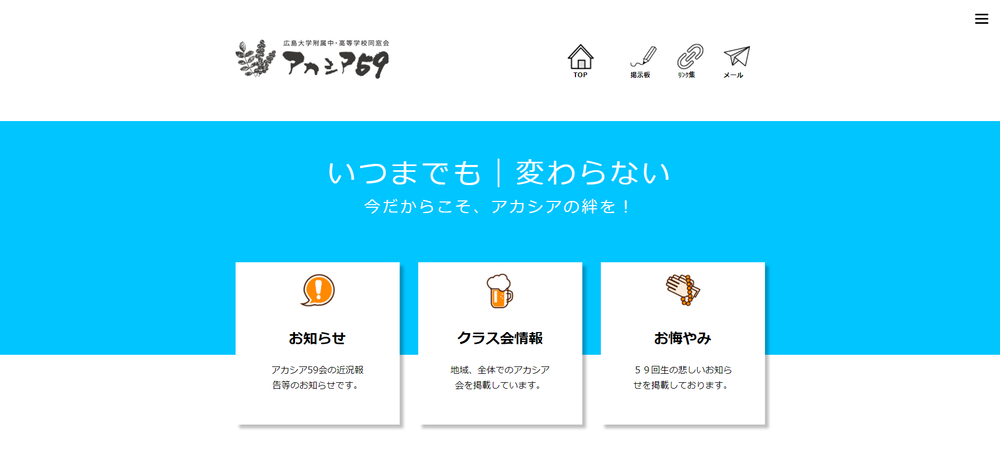

羽毛寝具専門店「KENKODO」
Url：https://kiiro-neko.github.io/kenkodo/
- 制作経緯
- 授業課題にて、テーマは「健康堂」内容は自由でＷＥＢサイトを制作。
- コンセプト
- 睡眠を大切にする40代以上の女性がメインターゲット。睡眠の重要性を重視し、質の高い羽毛寝具を求めるお客様に向けて作成しました。厳選された上質な羽毛を使用して最高品質の商品を提供し、お客様が心地よい眠りを手に入れるためのお手伝いが出来たらと考え制作しました。
- 担当領域
- すべて担当。写真はフリーサイトを活用。
- 制作期間
- 2週間
- 使用ソフト
- Photoshop：デザインカンプ、画像加工
Illustrator：ロゴ等
HTML,CSS,JavaScript
- ポイント
- ネイビー、グレーを基調とすることで、落ち着いた高級な印象を目指し、上質な眠りの魅力を伝えるために、美しいイメージと流れるスライドを使い、原材料や製造のこだわりをわかりやすく紹介しました。
「谷川ピアノ教室」様
Url：https://pc-hana.com/45/team-d
- 制作経緯
- 卒業制作として「谷川ピアノ教室」様のサイトリニューアル。
柔らかいイメージのホームページでスマホにも対応したサイトをご希望。
4チームによるコンペ形式で提案を行った。
- コンセプト
- 年齢や性別に関係なく、たくさんの方に「たにかわピアノ教室」を知ってもらい、好きになってもらうをテーマとして、柔らかい色調のオレンジをメンイカラーとしストレス無く欲しい情報に直ぐ辿り着けるデザインを心掛け、音符マークのキャラクターにアニメーションをつけに、お子さまにも喜んで頂けるような可愛らしさを意識作成しました。
- 担当領域
- デザイナーとしてトップページ及びヘッダーのコーディングや全体の調整を担当。
その他情報設計のワイヤーフレーム提案、デザインへのアドバイス、掲載文章の提案・校正など積極的に全体に関わる。
※ディレクター1名、デザイナー2名、コーダー2名の5名でチーム制作
- 制作時間
- 48時間
- 使用ソフト
- Figma：デザインカンプ
Photoshop：画像加工
Illustrator：ロゴ等
HTML,CSS(Sass),JavaScript,jQuery,PHP
- ポイント
- トップビューやキャッチコピーのテキストを印象的にみせるため、じわっとテキストが現れるアニメーションを提案・実装した。トップのコンテンツについては、上質さや落ち着いた印象を与えられるように、その場でフワッとコンテンツが現れる軽いアニメーションを提案・実装している。現在ページのヘッダーナビゲーションに下線を引きたいという要望がデザイナーから出た際には、メンテナンス性や時間効率を考えJavaScriptを活用した方法について調べ、実装した。
「広島大学付属中・高等学校同窓会 アカシア59」様
Url：https://kiiro-neko.github.io/akashia/

- 制作経緯
- 広島大学附属中・高等学校同窓会アカシア59のサイト管理者、原田先生からのサイトリニューアルに際して、トップページとお知らせページの制作。
- コンセプト
- 使いやすいデザインで同窓同士のつながりを強化するための情報発信を推進するよう制作しました。
- 担当領域
- コーディング担当
※デザイナー1名、コーダー1名の2名でチーム制作
- 制作時間
- 18時間
- ポイント
- シンプルなデザインのレイアウトで、スマートフォンからも使いやすく、メニューなど簡単に目的の情報にアクセスできるようにした。
水族館「KAMIYACHO AQUARIUM」
Url：https://kiiro-neko.github.io/aquarium/
- コンセプト
- メニューを分かりやすく配置し、水族館の特徴や情報をわかりやすく伝える工夫を凝らしました。 トップページの画像で多彩な海の恵みを象徴し、水族館の魅力を訪問者に伝わるようにしました。
- 担当領域
- すべて担当。写真はフリーサイトを活用
- 制作期間
- 2日間
- 使用ソフト
- Photoshop：デザインカンプ、画像加工
Illustrator：ロゴ等
HTML,CSS
ブローチ専門店「natural blue」
Url：https://kiiro-neko.github.io/natural/
- コンセプト
- シンプルなデザインで、天然石ブローチの美しさをアピールし、訪問者に商品や店舗の情報をわかりやすく提供することを目的としました。
- 担当領域
- すべて担当。写真はフリーサイトを活用
- 制作期間
- 2日間
- 使用ソフト
- Photoshop：デザインカンプ、画像加工
HTML,CSS
カフェ「skycoffee」
Url：https://kiiro-neko.github.io/skycoffee/
- コンセプト
- コーディングの練習のために作成。
- 担当領域
- 模写コーディング
- 制作時間
- 5時間
- 使用ソフト
- HTML,CSS
WEB制作チーム「NEW BREEZ」
Url：https://preview.studio.site/live/M3aAB75zWe
- 制作経緯
- 授業課題にて「WEB制作チーム」のサイトを制作。
- コンセプト
- より良い世界に変えるため、新しい風を吹かせるチームのＷＥＢページ。
- 担当領域
- skillページとCMSページの作成と素材集め、加工を担当
※5名でチーム制作
- 制作時間
- 12時間
- 使用ソフト
- Photoshop：画像加工
Illustrator：イラスト、ロゴ
studio
- ポイント
- Illustratorにて画像からイラストを作成、チームメンバーの特徴がよく出ているイラストに仕上がりました。イメージカラーはnew breezの風のイメージからグリーンとしページ全体に統一感とスタイリッシュな雰囲気を出しました。
新発売ビール「HANA BEER」
HANA BEER Commercial
- 制作経緯
- 授業にてテーマは自由でコマーシャルを制作。
- 担当領域
- すべて担当。画像、写真、音源はフリーサイトを活用。
- 制作時間
- 10時間
- 使用ソフト
- PowerPoint：動画、画像編集
Photoshop：画像加工
- ポイント
- 軽快な音楽で、新発売ビールのさわやかさ、仕事終わりには疲れを忘れて、冷たいビールが待っている、最高の時間を過ごすこと間違いない。ビールが飲みたくなるコマーシャル